Basic Use
Mike Johnson
Lynker, NOAA-Affiliatebasic_use.Rmd
library(hydrofabric3D)
#> The legacy packages maptools, rgdal, and rgeos, underpinning the sp package,
#> which was just loaded, will retire in October 2023.
#> Please refer to R-spatial evolution reports for details, especially
#> https://r-spatial.org/r/2023/05/15/evolution4.html.
#> It may be desirable to make the sf package available;
#> package maintainers should consider adding sf to Suggests:.
#> The sp package is now running under evolution status 2
#> (status 2 uses the sf package in place of rgdal)The goal of hydrofabric3D is to generate DEM-based cross sections for hydrographic networks.
Installation
You can install the development version of hydrofabric3D from GitHub with:
# install.packages("devtools")
devtools::install_github("mikejohnson51/hydrofabric3D")Example
This is a basic example which shows you how to cut cross sections for a network.
Define Network
library(hydrofabric3D)
library(dplyr)
#>
#> Attaching package: 'dplyr'
#> The following objects are masked from 'package:stats':
#>
#> filter, lag
#> The following objects are masked from 'package:base':
#>
#> intersect, setdiff, setequal, union
(net = linestring %>%
mutate(bf_width = exp(0.700 + 0.365* log(totdasqkm))))
#> Simple feature collection with 325 features and 5 fields
#> Geometry type: LINESTRING
#> Dimension: XY
#> Bounding box: xmin: 77487.09 ymin: 890726.5 xmax: 130307.4 ymax: 939129.8
#> Projected CRS: NAD83 / Conus Albers
#> # A tibble: 325 × 6
#> nhdplus_comid geometry comid totdasqkm dist_m bf_width
#> * <chr> <LINESTRING [m]> <dbl> <dbl> <dbl> <dbl>
#> 1 101 (128525.6 892408.3, 128565.7 … 1.01e2 7254. 3.25e3 51.7
#> 2 24599575 (128084.7 892952.4, 128525.6 … 2.46e7 7249. 7.00e2 51.6
#> 3 1078635 (127687.6 893270.4, 127799.7 … 1.08e6 7248. 5.22e2 51.6
#> 4 1078637 (124942.8 893959.6, 124948.2 … 1.08e6 68.2 4.17e3 9.41
#> 5 1078639 (125523.1 892528, 125657.3 89… 1.08e6 7180. 2.76e3 51.5
#> 6 1078577 (123219.9 902292.8, 123233.5 … 1.08e6 19.8 9.91e3 5.99
#> 7 1078575 (121975.5 909050.8, 122028.9 … 1.08e6 41.3 1.87e4 7.83
#> 8 1078657 (124263.8 892410.4, 124420.6 … 1.08e6 7179. 1.66e3 51.5
#> 9 1078663 (125628.9 892216, 125555.7 89… 1.08e6 0.099 7.54e2 0.866
#> 10 1078643 (124248.1 892440.7, 124263.8 … 1.08e6 7178. 3.41e1 51.5
#> # ℹ 315 more rows
plot(net$geometry)Cut cross sections
(transects = cut_cross_sections(net = net,
crosswalk_id = "comid",
cs_widths = pmax(50, net$bf_width * 7),
num = 10) )
#> Densifying
#> Smoothing
#> Cutting
#> Formatting
#> Simple feature collection with 2372 features and 7 fields
#> Geometry type: LINESTRING
#> Dimension: XY
#> Bounding box: xmin: 77486.95 ymin: 890563.3 xmax: 130368.6 ymax: 939130
#> Projected CRS: NAD83 / Conus Albers
#> # A tibble: 2,372 × 8
#> comid cs_id cs_lengthm cs_measure ds_distance lengthm sinuosity
#> <dbl> <int> <dbl> <dbl> <dbl> <dbl> <dbl>
#> 1 101 1 362. 0.393 12.8 362. 1.05
#> 2 101 2 362. 11.3 369. 362. 1.00
#> 3 101 3 362. 25.2 822. 362. 1.01
#> 4 101 4 362. 38.1 1242. 362. 1.05
#> 5 101 5 362. 50.1 1632. 362. 1.08
#> 6 101 6 362. 60.2 1961. 362. 1.19
#> 7 101 7 362. 68.7 2238. 362. 1.34
#> 8 101 8 362. 76.1 2480. 362. 1.34
#> 9 101 9 362. 86.1 2805. 362. 1.15
#> 10 101 10 362. 99.7 3250. 362. 1.00
#> # ℹ 2,362 more rows
#> # ℹ 1 more variable: geometry <LINESTRING [m]>
plot(transects$geometry)Define Cross section points
(pts = cross_section_pts(transects,
crosswalk_id = "comid",
dem = "/vsicurl/https://prd-tnm.s3.amazonaws.com/StagedProducts/Elevation/1/TIFF/USGS_Seamless_DEM_1.vrt"))
#> Simple feature collection with 24386 features and 11 fields
#> Geometry type: POINT
#> Dimension: XY
#> Bounding box: xmin: 77487.45 ymin: 890577.2 xmax: 130362.9 ymax: 939128.2
#> Projected CRS: NAD83 / Conus Albers
#> # A tibble: 24,386 × 12
#> comid cs_id pt_id Z cs_lengthm relative_distance cs_measure ds_distance
#> <dbl> <int> <int> <dbl> <dbl> <dbl> <dbl> <dbl>
#> 1 101 1 1 41.9 362. 0 0.393 12.8
#> 2 101 1 2 41.1 362. 32.9 0.393 12.8
#> 3 101 1 3 42.1 362. 65.7 0.393 12.8
#> 4 101 1 4 40.6 362. 98.6 0.393 12.8
#> 5 101 1 5 38.8 362. 131. 0.393 12.8
#> 6 101 1 6 36.2 362. 164. 0.393 12.8
#> 7 101 1 7 37.9 362. 197. 0.393 12.8
#> 8 101 1 8 41.6 362. 230. 0.393 12.8
#> 9 101 1 9 44.2 362. 263. 0.393 12.8
#> 10 101 1 10 44.3 362. 296. 0.393 12.8
#> # ℹ 24,376 more rows
#> # ℹ 4 more variables: lengthm <dbl>, sinuosity <dbl>, points_per_cs <dbl>,
#> # geometry <POINT [m]>Classify Cross section points
(classified_pts = classify_points(pts, crosswalk_id = "comid"))
#> Simple feature collection with 24386 features and 18 fields
#> Geometry type: POINT
#> Dimension: XY
#> Bounding box: xmin: 77487.45 ymin: 890577.2 xmax: 130362.9 ymax: 939128.2
#> Projected CRS: NAD83 / Conus Albers
#> # A tibble: 24,386 × 19
#> comid cs_id pt_id Z relative_distance cs_lengthm class point_type
#> <dbl> <int> <int> <dbl> <dbl> <dbl> <chr> <chr>
#> 1 101 1 1 41.9 0 362. left_bank left_bank
#> 2 101 1 2 41.7 32.9 362. channel channel
#> 3 101 1 3 41.2 65.7 362. channel channel
#> 4 101 1 4 40.5 98.6 362. channel channel
#> 5 101 1 5 38.5 131. 362. channel channel
#> 6 101 1 6 36.2 164. 362. bottom bottom
#> 7 101 1 7 38.6 197. 362. channel channel
#> 8 101 1 8 41.2 230. 362. channel channel
#> 9 101 1 9 43.4 263. 362. channel channel
#> 10 101 1 10 44.1 296. 362. right_bank right_bank
#> # ℹ 24,376 more rows
#> # ℹ 11 more variables: cs_measure <dbl>, ds_distance <dbl>, lengthm <dbl>,
#> # sinuosity <dbl>, points_per_cs <int>, bottom <dbl>, left_bank <dbl>,
#> # right_bank <dbl>, valid_banks <lgl>, has_relief <lgl>, geometry <POINT [m]>Explore!
library(ggplot2)
ggplot(data = filter(classified_pts, comid == 101) ) +
geom_line(aes(x = relative_distance, y = Z)) +
geom_point(aes(x = relative_distance, y = Z, color = class)) +
facet_wrap(~cs_id, scales = "free") +
theme_minimal() +
theme(legend.position = "bottom")
Time to get 2372 transects and 24386 classified points …
system.time({
cs = net %>%
cut_cross_sections(crosswalk_id = "comid",
cs_widths = pmax(50, net$bf_width * 7),
num = 10) %>%
cross_section_pts(
crosswalk_id = "comid",
dem = '/vsicurl/https://prd-tnm.s3.amazonaws.com/StagedProducts/Elevation/1/TIFF/USGS_Seamless_DEM_1.vrt') %>%
classify_points(crosswalk_id = "comid")
})
#> Densifying
#> Smoothing
#> Cutting
#> Formatting
#> user system elapsed
#> 11.454 0.337 69.397